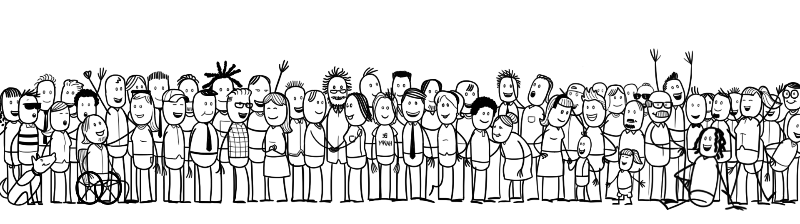

Friendly Societies
"Friendly Societies" is a worldwide alliance of small communities committed to providing mutual support in emergencies. It is based on the principles of personal responsibility, trust and voluntary solidarity.
Ideals
Our goal is mutual assistance in emergencies, based on the following shared ideals:
- Responsible, conscientious individuals are united in one community through personal choice.
- This electoral community creates a framework for implementing and practising community action with a distinct momentum.
- Individuals show genuine and insightful concern about their fellow man.
- The community recognizes the individuality and sovereignty of its members, protecting privacy and respecting private ownership, as well as different financial circumstances.
- Everyone fully understands the goals of the community and contributes to their implementation.
- We help each other in emergencies and difficult life events, improving living conditions and supporting one another during our personal journeys.
Mutual support in emergencies, is both an aim and a duty.
Social security occurs in human encounters through voluntary solidarity. When people get closer to others and show they care, this connection promotes an awareness of emergencies. When people succeed in perceiving emergencies and overcoming them together, trust grows.
The strength of a community is measured by the well-being of the weak and the needy. The community offers help where needed and resources that those concerned cannot provide for themselves. The community only acts when all members have mutually agreed.
For this reason, regular face-to-face meetings and mutual understanding are crucial to the success of these communities. Communities are created to ensure all members can get to know one another well enough.
Emergency aid is received through compassion, assistance and voluntary donations. Security is created through the trust each individual has in the community and not through formal contracts. There are no legal claims whatsoever.
Structure
Collaboration within Friendly Societies is built on three tiers:
Community
Friendly Societies are clearly arranged, small communities consisting of 10-20 people or families who know one another. These members bring mutual trust and build on this.
Alliance
10-30 of these communities form an alliance. Each of the participating communities is represented in these alliances by one of its members.
Umbrella Organization
Each alliance is part of a collective umbrella organization.
Our organizational and solidary structure is built on the principles of subsidiarity and sociocracy.
Subsidiarity
Anything that can be resolved in a lower tier will not be addressed by a higher tier, and anything that cannot be carried out by a lower tier will be brought to the attention of a higher tier for further deliberation.
Sociocracy
Members of each tier cultivate consensus in decision-making. If this is not possible then consent (a solution supported by all) must be reached. This means members must see that the minority has a voice in the decision-making process. A solution must be pursued through dialog until no more serious and justified objections exist within the framework of mutual goals.
Each community chooses a representative to participate in their respective alliance. Likewise, each alliance chooses a representative to participate in the umbrella organization.
Within the communities and alliances and in the umbrella organization, all decisions are reached by sociocratic consent.
Rules
These rules present the current state of affairs. The societal framework can change and Friendly Societies will continuously benefit from their experiences and learn from these. This will result in a continuous process of adaptation.
Membership
- Members are not actively solicited. Those interested in becoming members must take the initiative to approach a community.
- Admission into a community is determined by consensus following an introductory period.
- Membership automatically ends as soon as the member in question leaves the community or if all other members decide to end the membership based on their community rules (in theory, ultimately when they give their consent to expel a member).
Responsible behavior
- Firstly, each member is responsible for themselves and must consider their own risks, savings, income and expenditure in old age, etc.
Each will be asked to have or create their own financial plan. One possibility could be participating in an optional Friendly Societies Provident Fund savings plan, similar to the CPF in Singapore.
These are difficult topics, often feared and dreaded. However, if desired, the group can help to tackle these. - It is not always possible to avoid emergencies but often it is possible to prevent financial strain for the individual and, consequently, for the community. In this way, it could make sense to outsource some financial risks and for the community to come up with recommendations for a continued course of action. Examples could include: taking out individual liability insurance, term life insurance for single income families, disability insurance, etc.
Funding
- Obviously, while there are concrete recommendations, it is up to each community to choose how they will organize financial assistance - whether they collect regular payments (for example monthly contributions or a small percentage of each member's personal household expenditure), whether they accumulate savings, or whether they only act when necessary, having worked out and arranged a rapid course of action for these situations.
- Each community must have a tangible written plan so they can take responsible financial action. This plan is accessible to all (within the Friendly Societies and also outside of specific communities) and each member commits to uphold their community's plan.
- Each individual community must bear the brunt of their own emergencies and not the alliance or umbrella organization.
- To prevent communities from being overwhelmed by a major emergency or a large number of emergencies, respective alliances will set up mutual savings funds.
It is up to the specific alliance to determine how their communities will implement this. Typically, depending on size, social conditions and emergency situations encountered, they can seek a certain amount of alliance reserves. Each community participates with routine contributions, depending on their size. - 10% of the alliance income is passed on to the umbrella organization as a final mutual financial "cushion" for all alliances. The major part of the capital should certainly remain with the alliances, i.e. near the contributors.
Aid
- The principle of mutual aid applies in situations where an individual has an urgent need for something he cannot attain within his means. In this situation, they file a request for aid or the community approaches them.
- Aid can be of a financial or non-financial nature.
- Their community then decides by consent whether to provide aid in this specific circumstance. The goal of community aid is always the mitigation of a particular individual emergency situation.
- In cases of financial support, the community in question bears the financial costs. If the situation requires a significant amount of aid and the community feels overwhelmed, they may appeal for additional support from their alliance.
- In extreme cases, an overwhelmed alliance may also appeal to the umbrella organization to call on other alliances to provide additional aid.
The umbrella organization itself only provides financial assistance as an absolute last resort. - At no point is there a legal claim for aid (it is agreed that the nature and extent of the assistance are not enforceable by law). All contributions are in the form of a gift and are, therefore, voluntary.
Further opportunities and projects
Insurance
- Certain goals are easier to achieve through insurance products as opposed to having to ask a solidary community for aid.
At an adequate size, there could be advantages for members of being able to cover certain financial risks according to strict actuarial requirements by Friendly Societies (for example, survivor's pension, disability pension).
Provident Fund
- We are working on a voluntary savings plan for retirement funds and healthcare (which is similar to the CPF in Singapore).
Notes
A "community for mutual support in emergencies" can master many situations, as people are empathetic and show solidarity on their own. However, at the moment, it is not intended to be a solution or an alternative to an autonomous retirement and healthcare provision, neither is it suitable for such purposes. But we are working on it.
Much of what we do was inspired by Artabana (healthcare financing based on the principles of autonomy and solidarity).
How can I join?
You can write to the nearest community and ask if there is still space and if they are interested in taking you on as a member. If you don't have a community near you, then please feel free to start your own and we shall find an alliance for you.
PGP Public Key (fingerprint, checksum)
Links
- Video, Anton Howes
- Friendly society, Mises Institute